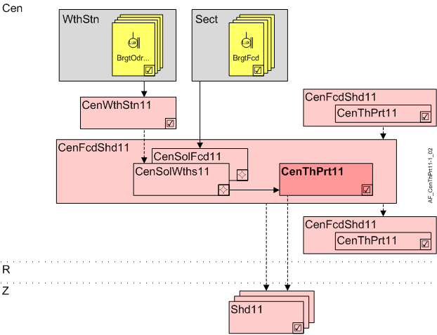

Central thermal protection (CenThPrt11)
Overview
The application function "Central thermal protection 11" (CenThPrt11) calculates the solar radiation state with the help of threshold values and time delays. It distributes it either to subordinate AFs CenThPrt11 or directly to the connected shading functions.
Note: Local thermal protection is active if one room is unoccupied (default value in RShdCoo11 for each room operating mode).

Cen | Central functions |
CenFcdShd11 | Central facade shading for automatic 11 |
CenSolWths11 | Central solar radiation from weather station 11 |
CenSolFcd11 | Central solar radiation on facade 11 |
CenThPrt | Central thermal protection 11 |
R | Room |
Z | Shading zone in room segment |
Shd11 | Shading 11, for shading and daylight use with venetian blinds or awnings, group member in a facade sector |
Function
Main input is the effective solar radiation (SolRdnEff) from CenSolRdnWths11 or CenSolRdnFcd11.
The AF calculates from it the solar radiation condition SolRdnCnd that can accept the following values: None, Low, Medium, High, and for which the threshold values can be configured.
The delays prevent movements that are too frequent.
Setting threshold values
Condition | SolRdnCnd | Background | Reaction of shading (example for load) *) | Reaction of shading (example for discharge) *) |
|---|---|---|---|---|
SolRdn < SolRdnCndLo | None | Heat loss from window is greater than gain from solar radiation. | Close (prevents cooling down). | Open (supports cooling). |
SolRdnCndLo <= SolRdn < SolRdnCndMe | Low | Heat loss from window is equal to gain from solar radiation. | Maintain present position. | Maintain present position. |
SolRdnCndMe <= SolRdn < SolRdnCndHi | Medium | High level of incident solar radiation. | Open (supports heating). | Close (prevents heating up). |
SolRdn >= SolRdnCndHi | High | Very high level of incident solar radiation. | Open (supports heating). | Lock manual operation (prevents heating up). |
*) The exact reaction of shading depends on the local configuration in the connected rooms (AF Shd11).
Hierarchical grouping
This AF supports hierarchical grouping. For detailed information, see Hierarchical grouping.
Interface to local and superordinate functions
Description | Object | Type | Source | Evaluation upon hierarchical grouping |
|---|---|---|---|---|
Solar radiation condition value | SolRdnCndVal | MCalcVal | From superordinate AF CenThPrt11 | Superordinate AF wins, its value is used |
Configuration
 objects
objects
Description | Object | Type | Default value |
|---|---|---|---|
Solar radiation at low condition 0...2000 [W/m2] | SolRdnCndLo | ACnfVal | 20 [W/m2] |
Solar radiation at medium condition 0...2000 [W/m2] | SolRdnCndMe | ACnfVal | 50 [W/m2] |
Solar radiation at high condition 0...2000 [W/m2] | SolRdnCndHi | ACnfVal | 150 [W/m2] |
 Parameter
Parameter
Description | Parameter | Default value |
|---|---|---|
Solar radiation switch-on delay 0...120 [min] | SolRdnDlyOn | 20 [min] |
Solar radiation switch-off delay 0...120 [min] | SolRdnDlyOff | 20 [min] |
Interface
Interface | Description | Type | Ref. | Owner |
|---|---|---|---|---|
SolRdnEff | Effective solar radiation | ACalcVal | ● | - |
SolRdnCndVal | Solar radiation condition value 1:None | MCalcVal | ● | - |
CenFcdMst | Manager for central facade function for automatic | GrpMaster | ◉ | CenFcdShd11 |
SolRdnCndLo | Solar radiation at low condition | ACnfVal | ● | - |
SolRdnCndMe | Solar radiation at medium condition | ACnfVal | ● | - |
SolRdnCndHi | Solar radiation at high condition | ACnfVal | ● | - |